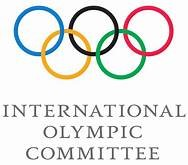

Avant que le CIO ne déclare le E-sport comme un sport à l’état pur son statut était remis en cause car celui ne requiert pas de qualités physiques et sportives habituelles comme l’endurance, la force, la souplesse…
Petite vidéo explicative sur l’Esport est sa légitimité en tant que sport :

En revanche, afin d’atteindre un bon niveau au E-sport, il faut acquérir des qualités intellectuelles et de réflexion. Il peut être qualifié de sport intellectuel comme les échecs. Le E-sport nécessite donc beaucoup de qualités comme la coordination d’équipe, la concentration, la patience, la réflexion…
De plus les LAN party sont souvent internationales il faut donc pouvoir communiquer avec ces coéquipiers et les autres participants en étant à l’aise avec les langues et principalement l’anglais.
De nombreux jeux sont utilisés pour le Esport pendant les Lan party : pas seulement destiné au sport comme Fifa, NBA 2K, Madden NFL mais aussi des jeux de combat : Streetfighter, de cartes ; Hearthstone, de stratégie League of Legends ou jeu de tir comme Call of Duty ou Overwatch